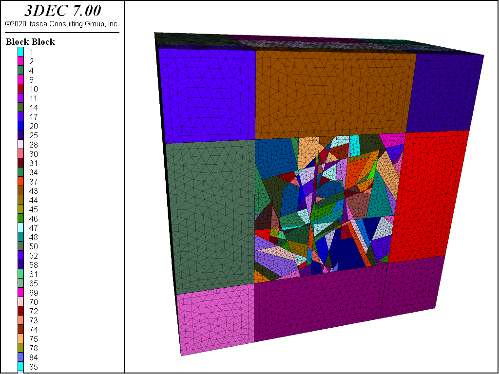
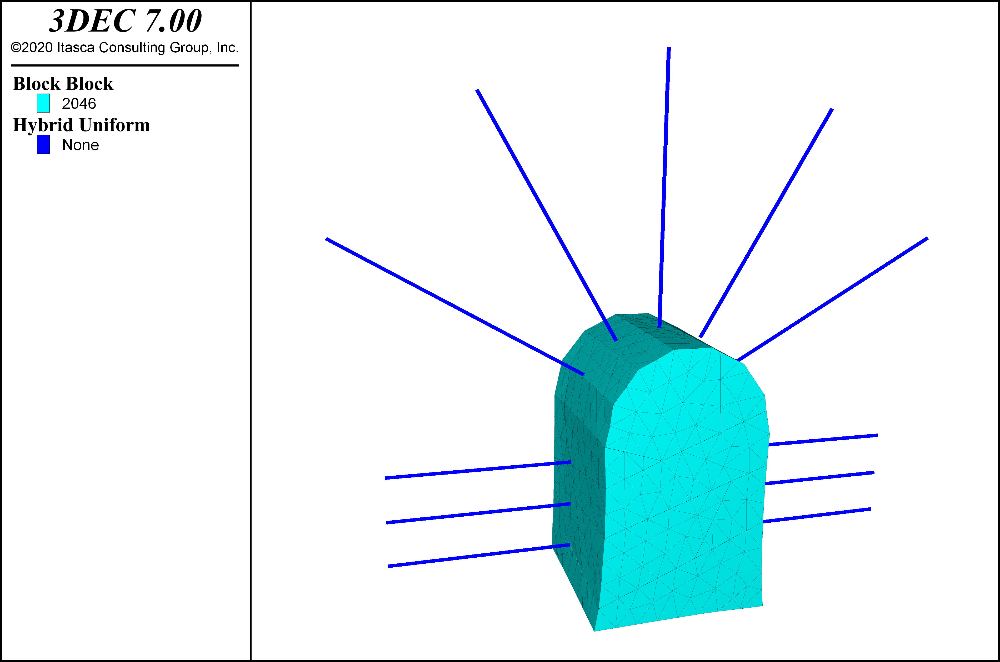
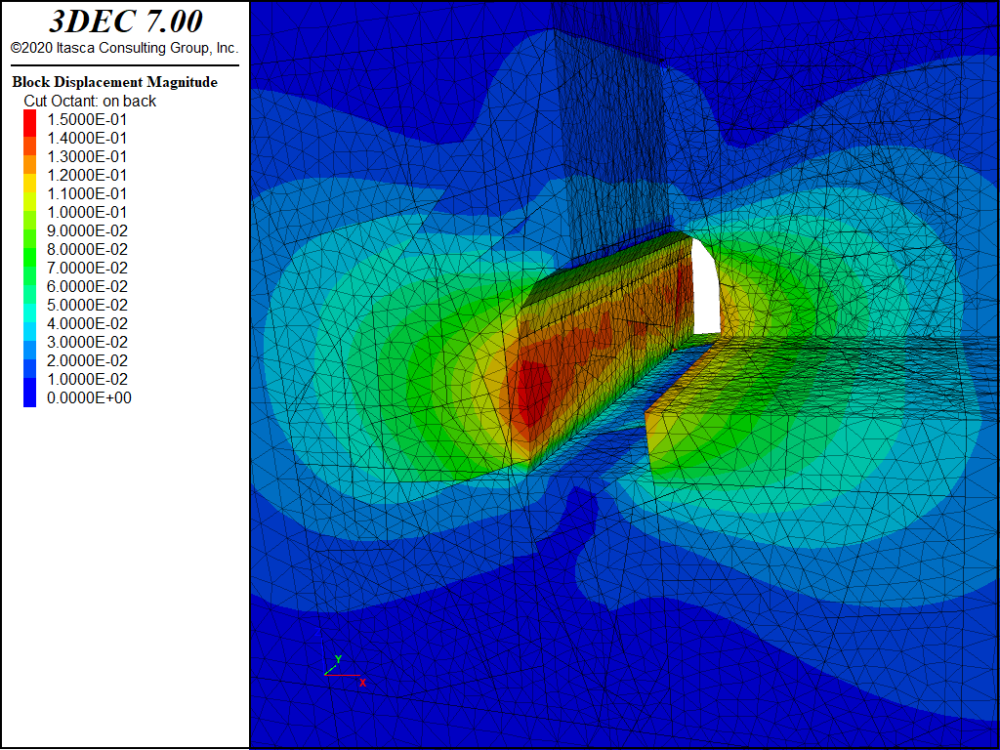
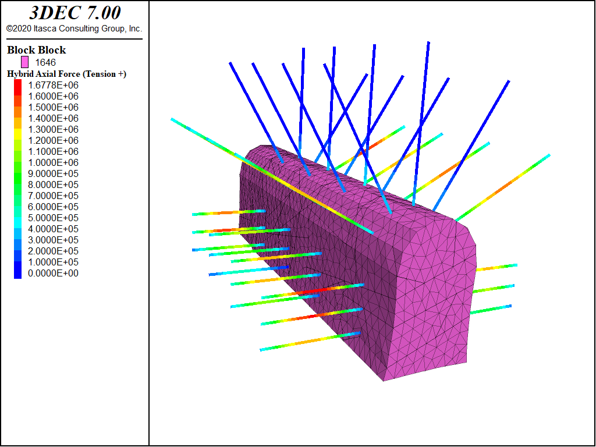
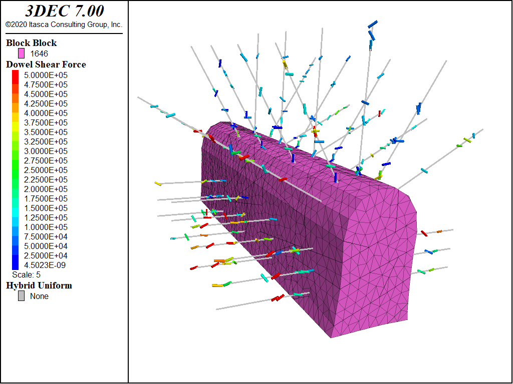

支护隧洞
问题描述
注意
要在 3DEC 中查看此项目，请使用菜单命令 。选择“3DEC/ ExampleApplications/ Supported_tunnel”，然后选择“Supported_tunnel.prj”进行加载。所用的主数据文件（main data files）显示在本示例的末尾。所有数据文件都可在该项目中找到。
问题描述
本示例展示如何在裂隙岩体中创建简单的支护隧洞。节理采用离散裂隙网络（DFN）逻辑模拟，隧洞采用混合锚杆支护。
3DEC 模型
模型几何
3DEC 模型如图 1（Figure 1）所示。模型首先创建一个 20x10x20 m 的砖块，然后进行切割以定义中心的关注区域。此外还沿 y 方向进行三次切割，以定义隧洞开挖的各阶段。
隧洞通过导入 dxf 并使用命令 按几何切割区块命令（block cut geometry） 创建。
生成服从幂律尺寸分布的 DFN，其指数为 3。最小和最大裂隙尺寸分别为 0.5 m 和 20 m。
在关注区域生成棱边长度为 0.25 m 的四面体网格单元，区域之外为 0.5 m。


图 1：构成隧洞模型的已划分网格块体。
属性
网格单元赋予莫尔-库仑材料模型，其属性如下：
- vf v fc cr5 tygy v 摩擦角，\(\phi\) = 30^{circ}
- 抗拉强度，\(T\) = 0
模型求解
初始状态
所有边界均固定，并施加以下初始压应力：
\(\sigma_{xx}\) = 40 MPa \(\sigma_{xx}\) = 30 MPa \(\sigma_{xx}\) = 10 MPa
随后将模型求解至初始平衡。
开挖与支护
开挖隧洞的前 2 m 并求解模型。然后按约 0.5 m 的间距添加混合锚杆，边墙锚杆长度取 2 m，顶拱锚杆长度取 4 m。底板不安装锚杆。每轮开挖共使用 11 根锚杆（见图 2（Figure 2））。
在每根锚杆穿过节理处自动生成销钉段。销钉长度设为 5 cm。


图 2：第一轮开挖后安装的混合锚杆。
锚杆安装完成后，再开挖 2 m 隧洞并求解模型。此过程再重复三次，以完成整个 10 m 长隧洞的开挖与支护。
结果与讨论
3DEC 模拟得到的位移如图 3（Figure 3）所示。图 4（Figure 4）显示混合锚杆中的轴力，图 5（Figure 5）显示销钉中的剪力。支护成功使隧洞保持稳定，模型在每个开挖阶段后均达到平衡。


图 3：开挖后隧洞中的位移。


图 4：混合锚杆中的轴力。


图 5：销钉中的剪力。
数据文件
tunnel-1.dat
model new
model random 10000
model large-strain on
model domain extent -20 20 -20 20 -20 20
block tolerance 1e-3
block create brick -10 10 -5 5 -10 10
; 定义关注区域
; 施工缝的 id 为 99
block cut joint-set origin 0 0 -5 joint-id 99
block cut joint-set origin 0 0 5 joint-id 99
block cut joint-set dip 90 dip-dir 90 origin 5 0 0 joint-id 99
block cut joint-set dip 90 dip-dir 90 origin -5 0 0 joint-id 99
geometry import 'tunnel.dxf'
block cut geometry 'tunnel' joint-id 99
block group 'tunnel' range geometry-space 'tunnel' count odd
; 定义开挖轮次
block cut joint-set dip 90 origin 0 -3 0 spacing 2 joint-id 99
block join
; 在关注区域内添加裂隙
block group 'center' slot 'construction' range pos-x -5 5 pos-z -5 5
block hide range group 'center' not
fracture template create "dfn-template" size power-law 3 size-limits 0.5 20
fracture generate dfn "dfn1" template "dfn-template" fracture-count 30000
block cut dfn name "dfn1"
; 生成网格，关注区域采用较小单元
block zone generate edgelength 0.25
block hide off
block zone generate edgelength 0.5
;; 新的网格划分功能
;block hide off
;block zone size edgelength 0.25 range group 'center'
;block zone size edgelength 0.5 range group 'center' not
;block zone gcm2 min-edge 0.25 max-edge 0.5
==================================================
block zone cmodel assign mohr-coulomb
block zone prop dens 2500 young 1e9 poiss 0.25
block zone prop cohesion 1e7 friction 35 tension 1e6
; 将施工缝设置为弹性
block contact jmodel assign elastic
block contact prop stiff-norm 1e11 stiff-shear 1e11
; 将节理设为 Mohr-Coulomb 模型
block contact jmodel assign mohr range dfn-3dec 'dfn1'
block contact prop stiff-norm 1e10 stiff-shear 1e10 friction 30 ...
range dfn-3dec 'dfn1'
; 默认接触参数
block contact material-table default prop stiff-norm 1e10 ...
stiff-shear 1e10 friction 30
model save 'zoned'
tunnel-2.dat
model rest 'zoned'
; 初始状态
block insitu stress -40e6 -30e6 -10e6 0 0 0
; 边界条件
block gridpoint apply vel 0 0 0 range pos-x -10
block gridpoint apply vel 0 0 0 range pos-x 10
block gridpoint apply vel 0 0 0 range pos-z -10
block gridpoint apply vel 0 0 0 range pos-z 10
block gridpoint apply vel-y 0 range pos-y -5
block gridpoint apply vel-y 0 range pos-y 5
model solve convergence 1
model save 'initial'
tunnel-exc.dat
model restore 'initial'
block gridpoint ini dis 0 0 0
block excavate range group 'tunnel' pos-y -5 -3
model solve
model save 'exc-1'
==============================================
fish def add_cables(ypos)
; 左侧
command
sel hybrid create by-line (-1,[ypos],-0.5) (-3,[ypos],-0.5) ...
prop 1 segments 10 dowel-length 0.05
sel hybrid create by-line (-1,[ypos],0) (-3,[ypos],0) ...
prop 1 segments 10 dowel-length 0.05
sel hybrid create by-line (-1,[ypos],0.5) (-3,[ypos],0.5) ...
prop 1 segments 10 dowel-length 0.05
end_command
; 右侧
command
sel hybrid create by-line (1,[ypos],-0.5) (3,[ypos],-0.5) ...
prop 1 segments 10 dowel-length 0.05
sel hybrid create by-line (1,[ypos],0) (3,[ypos],0) ...
prop 1 segments 10 dowel-length 0.05
sel hybrid create by-line (1,[ypos],0.5) (3,[ypos],0.5) ...
prop 1 segments 10 dowel-length 0.05
end_command
; 顶部
loop i (1,5)
local angle = math.pi/6.0*float(i)
p1x = math.cos(angle)
p1z = 1.0 + math.sin(angle)
p2x = 4.0*math.cos(angle)
p2z = 1.0+4.0*math.sin(angle)
command
sel hybrid create by-line [(p1x,ypos,p1z)] [(p2x,ypos,p2z)] ...
prop 1 segments 10 dowel-length 0.05
end_command
end_loop
end
[add_cables(-4)]
sel hybrid prop 1 cross-sectional-area 181e-6 young 98.6e11 yield-tension 5e6 ...
grout-stiffness 1.12e9 grout-cohesion 1.75e9
; 销钉参数
sel hybrid prop 1 dowel-stiffness 2e10 dowel-yield 5e5 dowel-strainlimit 0.1
block excavate range group 'tunnel' pos-y -3 -1
model solve
model save 'exc-2'
=======================================
[add_cables(-2)]
block excavate range group 'tunnel' pos-y -1 1
model solve elastic
model save 'exc-3'
=======================================
[add_cables(0)]
block excavate range group 'tunnel' pos-y 1 3
model solve
model save 'exc-4'
=======================================
[add_cables(2)]
block excavate range group 'tunnel' pos-y 3 5
model solve
model save 'exc-5'
| 这些内容对您有帮助吗？… | FLAC3D © 2019, Itasca | 原文更新于 2020 年 10 月 8 日 |
| 版权与免责声明 | ||